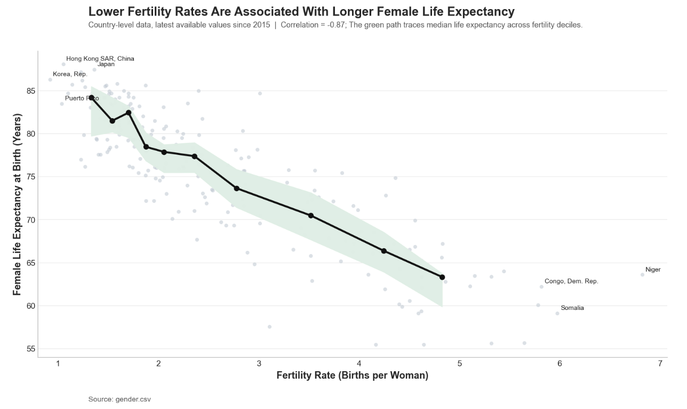
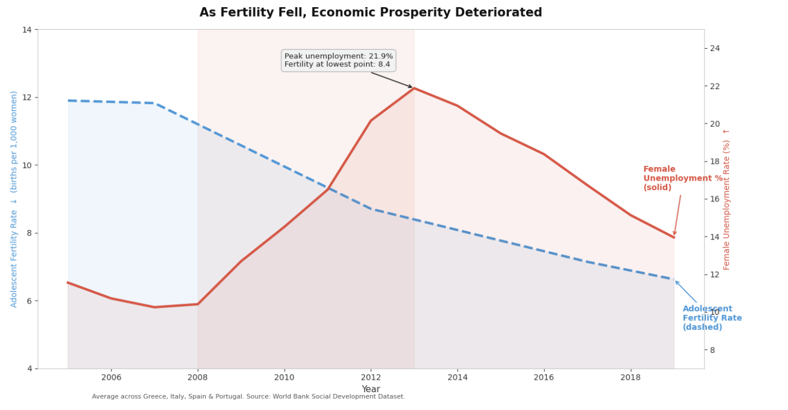

Proposition: Lower fertility rates reflect development and improved living conditions.
FOR the Proposition

Design Decisions and Rationale:
- RATIONALE_1
- RATIONALE_2
- RATIONALE_3
AGAINST the Proposition

Design Decisions and Rationale:
- Truncated Y-axes (-1.5): Both axes start well above zero (fertility starts at 4, unemployment starts at 7), exaggerating the steepness of both trends. A reader unfamiliar with dual-axis conditions will perceive the divergence as far more dramatic than it actually is. Starting both axes at zero was considered but rejected because it flattened the visual story entirely, making the opposing trends nearly imperceptible.
- Country Selection (Greece, Italy, Spain, Portugal) (-1): Filtering to Southern Europe, and aggregating the measures into one line for each measurement, was framed as a geographic choice, but it is fundamentally a data filtration choice. These 4 countries experienced the sharpest post-2008 unemployment spikes in Europe while also having declining fertility, making them ideal for the opposition argument. Germany and the Netherlands, which are similarly low-fertility countries but maintained low unemployment, were excluded from this visualization.
- Implied Causation via Dual-Axis Layout (-0.5): Placing two opposing trends on the same chart with mirrored axes suggests a causal or correlational relationship without explicitly claiming one. The visualization never states that falling fertility causes rising unemployment, but the visual layout can lead readers to infer it, leading to a score of -0.5, slight deception.
- Recession Band Annotation (+0.5): Labeling the shaded region “Financial Crisis" is the most earnest decision in the chart, disclosing the confounding variable that explains both trends. However, it can’t earn a full 2 because it’s placed subtly and framed as context, leading to readers absorbing it as a helper to the argument. It adds credibility without undermining persuasion.
Final Reflection
[WRITE FINAL REFLECTION PARAGRAPHS HERE.]